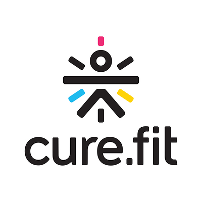

Good software starts with understanding people.
My work spans mobile apps, web interfaces and backend systems. I care about how those pieces fit together, and whether the result is useful, reliable and easy to maintain.
At 1Loom, I bring that approach to small, focused apps. My professional experience combines hands-on development, system design and guiding engineering teams.
What I build
-
System design
Practical architectures shaped around the product, with reliability, scale and long-term maintenance in mind.
-
Web & backend
Interfaces and services built together so the product works well from end to end.
-
Mobile apps
Android and iOS apps built for smooth, dependable everyday use.
Testimonials
-
Srikar Chakka
Arnab was one of primary POCs for the pod executive applications which are used in Instamart dark stores as part of SCM. He had shown immense ownership during the migration of the aforementioned apps which led to the improvement in performance and maintainability. While doing this project, he stepped up and became one of the key cogs of the Instamart app team.
-

Vijo Joseph
I’ve had the opportunity to work closely with Arnab at ASAPP, where we collaborated on building and improving our ChatSDK across mobile platforms.
What I appreciate most about Arnab is his ability to look beyond just his own area of work. As an iOS engineer, I've found his understanding of mobile architecture, API design, and the challenges across different platforms really valuable. He is someone you can have a productive technical discussion with, whether it's about SDK integration, debugging a tricky issue, or deciding on an approach that works well for both Android and iOS.
Arnab takes strong ownership of what he builds and is always willing to jump in when the team needs help. He brings a practical mindset to engineering decisions, balancing code quality, performance, and delivery timelines without unnecessarily complicating things.
Beyond his technical skills, he's approachable, collaborative, and genuinely easy to work with. I'd happily recommend Arnab to any team looking for a dependable engineer who can take ownership of complex problems and work well with people across different disciplines.
-
Akshat Sharda
Known Arnab from our CureFit days. He is a highly dependable software engineer who consistently raised the bar for quality. He worked extensively on Android development, where he identified and fixed multiple memory issues and hard-to-reproduce bugs that directly improved app stability and customer experience. Beyond core development, Arnab naturally took on additional responsibilities whenever needed — contributing to system design discussions, maintaining clear technical documentation, and approaching every problem with a strong sense of customer obsession. His ability to balance engineering depth with product thinking made him a valuable teammate and a pleasure to work with.
-

Rameshwar Singh
I’ve had the pleasure of working with Arnab both as a colleague at Adansa Solutions Pvt Ltd and as a classmate during our MCA post-graduate studies. At Adansa, while I focused on iOS development and Arnab on Android, I was constantly impressed by his technical depth, problem-solving skills, and meticulous approach to engineering. Arnab has a remarkable ability to understand complex systems quickly, identify potential issues before they escalate, and implement robust solutions that improve both app performance and user experience. Beyond his technical skills, his keenness to learn, attention to detail, and collaborative spirit make him a standout engineer. He’s the kind of teammate who elevates the entire team, contributes thoughtfully to system design, and consistently ensures quality at every step.
Teams & organisations I’ve worked with
